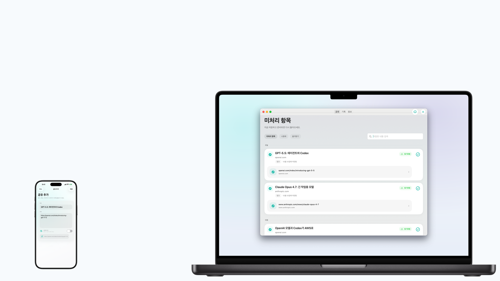
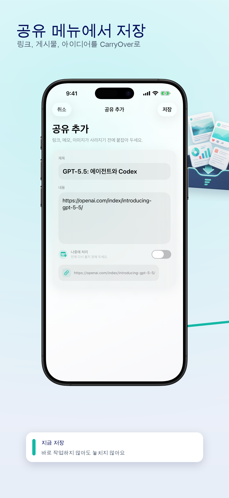
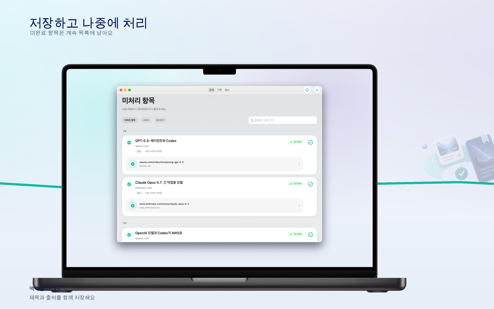

시스템 공유 시트
Safari, 메모, 소셜 앱 등 공유를 지원하는 앱에서 텍스트와 링크를 저장하세요.

지금 저장하고 나중에 실행
휴대폰 공유 메뉴에서 저장하고, Mac에서 원문을 열어 이어서 처리하세요.

링크, 게시물, 아이디어를 CarryOver로
미완료 항목은 계속 목록에 남아요

출처를 열고 확인한 뒤 완료하세요
Safari, 메모, 소셜 앱 등 공유를 지원하는 앱에서 텍스트와 링크를 저장하세요.
공유 텍스트 안의 URL을 감지하고 원래 맥락과 함께 보관합니다.
CloudKit으로 저장 항목을 동기화해 iPhone, iPad, Mac을 맞춰 줍니다.
미완료 항목은 계속 목록에 남아요
출처를 열고 확인한 뒤 완료하세요
완료한 항목은 기록에 남아요